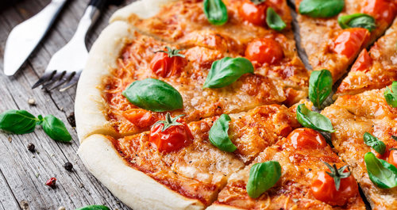
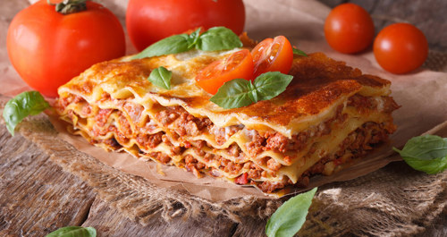
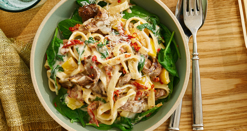
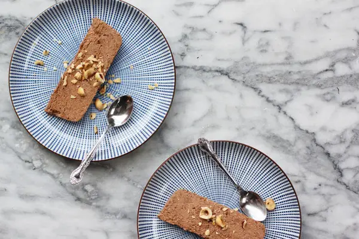
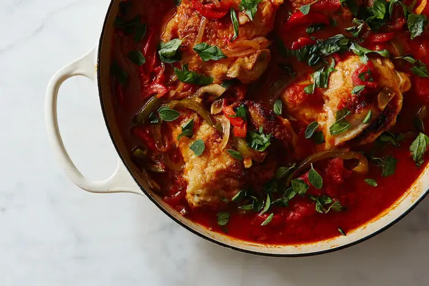
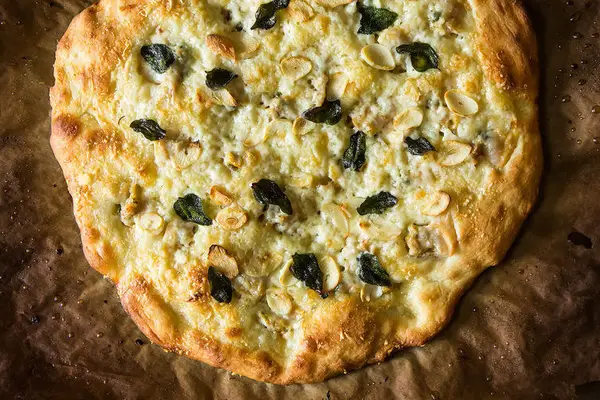

What does italian cuisine look like?
By: Anonymous User
Est. time to read: 5 mins
We were lucky in that the appliances in the home had been recently replaced and I liked them. I had specific needs for appliances - I wanted a large side-by-side fridge, two ovens and a 6-burner range. And this house had all of those. That was lucky because of all the backordered appliances during Covid, so I got to avoid that frustration.

Why italian cuisine is so tasty?
1. Fresh, Quality Ingredients:
The foundation of Italian cuisine lies in the use of fresh, high quality ingredients. From San Marzano tomatoes to extra virgin olive oil, Italian cuisine focuses on simple but tasty ingredients. The quality of the ingredients is essential to create authentic and delicious dishes.
2. Simplicity and Simplicity:
Italian cuisine is characterised by its simplicity. Italian dishes tend to have few ingredients, allowing the natural flavours to shine through. Al dente pasta with a fresh tomato and basil sauce or an authentic margherita pizza are perfect examples of this simplicity that brings out the flavours.
3. Regional Variety:
Italy is known for its culinary diversity, and each region has its own repertoire of traditional dishes. From risotto in the north to fresh pasta in the centre and fish in the south, each region brings its own unique ingredients and culinary techniques.
4. Love for Local Products:
Italians have a deep love for local and seasonal produce. This is reflected in the freshness of ingredients and the importance of consuming products from the region. Local markets are an integral part of the Italian culinary experience.
5. Tradition and Family:
Italian food is all about tradition and family. Many recipes have been passed down from generation to generation, and meals are often moments of family togetherness and celebration.
6. Focus on Experience:
Italian food is not just about eating, but about enjoying a complete experience. Eating is a social act, and Italians value the time spent together at the table, sharing laughter and conversation.
Popular italian dishes
Margarita
The first thing that comes to mind when you think of Italian cuisine is undoubtedly pizza. Pizzas, made with a variety of ingredients, offer an option to satisfy every palate. Pizza, considered the most important dish in Italy, plays a big role in the country's cuisine, even though it is known as fast food in the world.
The most frequently preferred pizza recipe in Italy is Margarita, and it is consumed all over the world with its light structure and taste that appeals to every taste.
Prepared in a very practical way, Margarita contains flour, olive oil, water, dry yeast, salt, granulated sugar, tomatoes, oregano, basil, and mozzarella cheese. Considering its ingredients, pizza is also a suitable choice for a vegetarian diet, and it is a filling option.
Lasagna
Lasagne, which originated in Bologna, Italy, is an Italian dish that is among the local flavours of the country. It is also considered a type of pasta dish and is prepared with different methods and ingredients. Lasagna typically contains lasagna sheets, ground meat, onions, tomatoes, tomato paste, olive oil, garlic, salt, butter, milk, flour, black pepper, and Parmesan cheese. The meat, tomato sauce, and special dough are prepared and baked in the oven, topped with béchamel sauce and cheese.
Fettucini Alfredo
Fettuccine Alfredo is a type of pasta unique to Italy, made with ingredients such as butter, Parmesan cheese, chicken breast, mushrooms, olive oil, cream, basil, garlic, and black pepper. The inventor of the dish, which appeared in a restaurant in Rome at the beginning of the 20th century, is Alfredo Di Lelio. Although cream and chicken are not used in the first recipe, this unique flavor, which has spread around the world over time, is made with different techniques and ingredients. Fettucini Alfredo, which manages to attract attention with its soft texture, lingering flavour, and satisfying feature, is among the favourite dishes that you can find in almost every restaurant.
Not popular italian dishes to cook at home
Gianduia Semifreddo (Chocolate-Hazelnut Frozen Dessert)
 RecipeChicken Cacciatore
 RecipeWhite Clam Pizza
 RecipeThank you for reading my blog! If you find the information here interesting, you may also like posts of my colleagues!
Checkout them out: